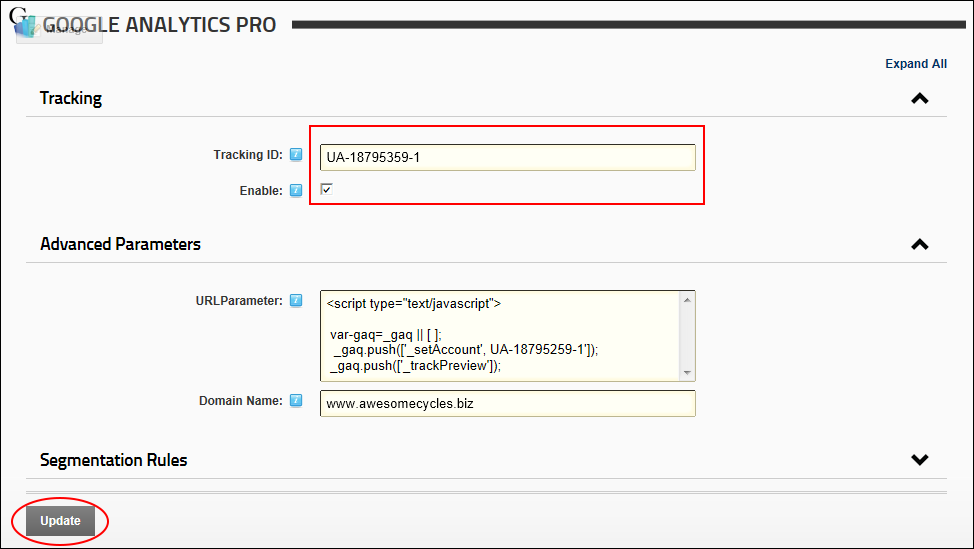

Configuring Google Analytics/Google Analytics Pro
How to configure either the Google Analytics or the Google Analytics Pro module.
You must have an existing Google Analytics account. Visit the Google Analytics website at http://www.google.com/analytics and click the Create an Account button.
Configuring Google Analytics
- Navigate to Admin > Advanced Settings >
 Google Analytics Pro - OR - Go to a Google Analytics Pro module.
Google Analytics Pro - OR - Go to a Google Analytics Pro module.
- In the Tracking ID text box, enter the website tracking ID that you obtained from the welcome message sent by Google when you signed up for an account.
- Optional. In the URL Parameter text box, enter the JavaScript code fragment that will be passed as a parameter to the page tracker. This is used to customize the value tracked in Google Analytics instead of the default location.
-

Configuring Google Analytics Pro
- Login to your Google Analytics account.
- Go to https://www.google.com/analytics/web/provision?et=&hl=en&authuser=#provision/SignUp/ after logon.
- Click the Advanced Segments button.
- Go to you DNN site.
- Navigate to Admin > Google Analytics Pro - OR - Go to a Google Analytics Pro module.
- In the Tracking ID text box, enter the website tracking ID that you obtained from the welcome message sent by Google when you signed up for an account.
- At Enable, check
 the check box to enable Google Analytics Pro - OR - Uncheck
the check box to enable Google Analytics Pro - OR - Uncheck  the check box to disable Google Analytic Pro.
the check box to disable Google Analytic Pro.
- Expand the Advanced Parameters section.
- Optional. In the URL Parameter text box, enter the JavaScript code fragment that will be passed as a parameter to the page tracker. This is used to customize the value tracked in Google Analytics instead of the default location.
A list of the available parameters is included below this tutorial.
- Optional. In the Domain Name text box, enter the domain name of this site to aggregate visits to multiple subdomains in a single profile as if they were a single site. Example: entering ".sample-domain.com" (notice the leading ".") allows you to track dogs.sample-domain.com and cats.sample-domain.com as a single entity.
- Click the Update link to enable Google Analytics Pro and start collecting statistics.

Here is the list of variables that can be added to the Advanced Parameters section in the URL Parameter field
_setCustomVar(index, name, value, opt_scope)
index (required): The slot for the custom variable, it can range from 1-5 for standard accounts or 1-50 for Premium accounts.
name (required): The name for the custom variable, a string that identifies the custom variable and appears in the top-level Custom Variables report of the Analytics reports. For example, if you are using a slot to track gender, the name would be 'Gender'.
value (required): The value for the custom variable, it appears in the table list of the UI for a selected variable name. Typically, you will have two or more values for a given name. Using the 'Gender' example above, the values would be either 'Male' or 'Female'.
opt_scope (optional): The scope for the custom variable. As described above, the scope defines the level of user engagement with the site. It is a number whose possible values are 1 (visitor-level), 2 (session-level), or 3 (page-level). When left undefined, the custom variable scope defaults to page-level interaction.